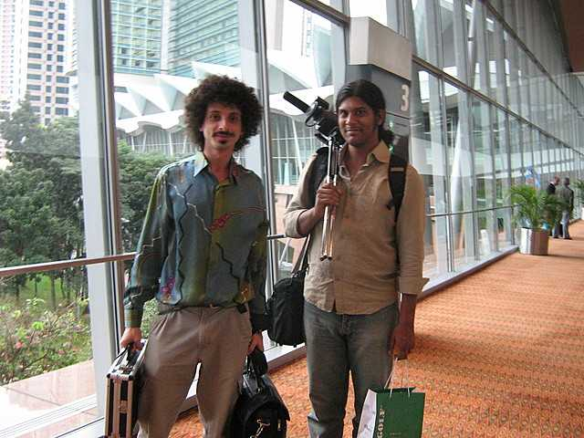
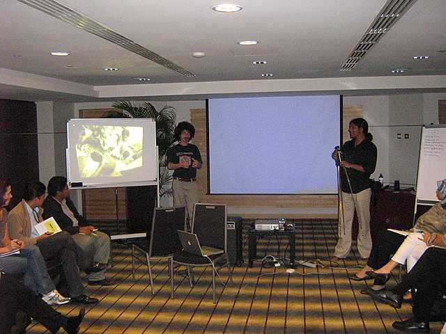
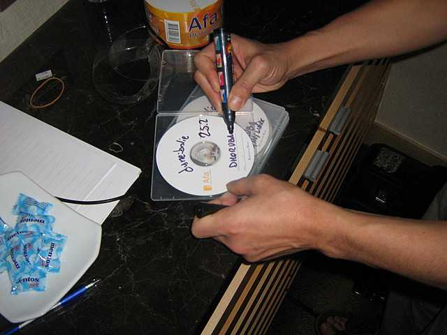
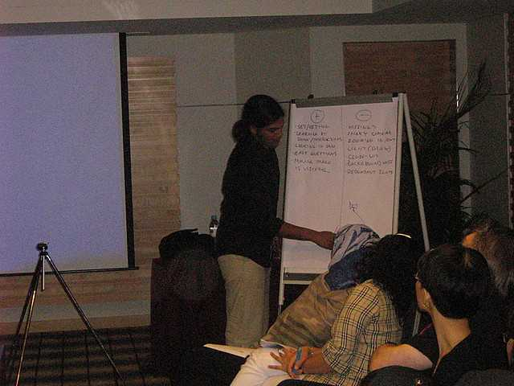

Jaromil's Musings

leave your comments
 printable page
printable page
This report was commissioned by IDRC and is released under the GNU Free Documentation License with no invariant parts.
I was involved in the i4d festival, at the GK3 conference, to lend expertise for the video workshop, facilitated by Rana Ghose, which was held in Kuala Lumpur (Malaysia), on 10 December 2007, organised by CSDMS.
|  |
| Jaromil and Rana |
The motivation to participate in this initiative, was the possibility to share with participants from developing countries, knowledge about FOSS (Free Open Source Software) for multimedia creativity, in the belief that adoption of FOSS widens access to technology by offering ways to recycle existing infrastructures, and therefore lowering financial requirements for cultural production, where technology is required.
Furthermore, a remarkable positive effect of the adoption of FOSS in such contexts lies in providing an autonomous pattern of development: tools that are free to be copied, shared, modified and even resold, both locally and globally, among communities, foster the creation of self sustainable economies. Last but not least I was excited by the idea of collaborating with Rana Ghose, an activist whose work is inspiring for my own reflection about priorities and methods employed in our initiatives.
For my own contribution I adopted the GNU/Linux LiveCD distribution dyne:bolic, which I'm maintaining, with the help of a broad grass-roots community. The main reason for its adoption is the unique set of features, not found in any other GNU/Linux distributions, as well the presence of all software applications needed for multimedia creativity in one CD, and the fact that the Free Software Foundation recommends and mirrors this distribution as the GNU/Linux multimedia creation tool.
A total of 22 participants, expressed a specific interest in learning how to produce video, and later empower their community with the skills we were sharing. They were a privileged group - very well equipped with fast personal computers, and recently marketed audio/video devices, and most of them had basic skills in desktop usage and media production.

The workshop was hosted with a well equipped set-up, there was no technical need left unsatisfied, and the lunch break was at the same time pleasant and practical, with delicious food provided in a room adjacent to the workshop room.
The production of video documentation being the main focus of the workshop, participants were approached so that the complexity of the task would be blended with the familiarity and simplicity of the software applications adopted. Microsoft's product Movie Maker, present by default in the XP and Vista operating systems, was the most familiar platform, and therefore Rana led the video-making part of the workshop referring to it, while I did my best to refer people to FOSS alternatives that could efficiently and easily accomplish the same tasks.
An approach like the above is made necessary by the widespread adoption of proprietary software in video-making and its advanced stage of development at this point in time. It is important to take into account what people are used to, when training people, if we are to introduce them to FOSS.
I found this mild collaboration between well known proprietary systems and not-yet ready FOSS software a good approach at present, mostly focusing on empowering people with operational skills in mission-critical developing environments, rather than frustrating them with current limits of FOSS in video editing. On the basis of my experience and the perception of needs raised by this workshop, my rough prediction is that in 18 months from now FOSS applications like Open Movie Editor or KDEnLive can completely substitute proprietary solutions, and I'm personally looking forward to re-run such a workshop based completely on FOSS. My presence as a FOSS expert raised a good level of interest: at least 4 participants were already used to GNU/Linux (but didn't have it installed on their PCs), a larger number of them had heard about it and were curious to know more, showing enthusiasm for its philosophy and grass-roots approach. In this workshop I've taken the opportunity, to briefly show the range of FOSS multimedia applications available, and provide an easy and non-intrusive way to run GNU/Linux besides the existing operating system.

Free copies of dyne:bolic liveCD were made on the spot, and while no merchandising is available for dyne products, the value of a hand written CD is always well appreciated, and makes people feel closer to the possibility of doing it themselves. As each participant received a CD, he or she was encouraged to copy it, modify it and even sell it at will: this aspect of FOSS is often neglected even if it is crucial to define the wide boundaries of its freedom, so I found it appropriate to mention that it can be copied and sold to create local economies. When related to pirate economies like DVD copying of movies and their specific support to weaker contexts in societies, it becomes clear that this aspect of FOSS can be of great importance, and I did my best to elaborate more on the topic in the i4d film festival panel.
Unfortunately, the limited amount of time available didn't made it possible to explore multimedia production with FOSS, as priority was given to Rana's video-making training, which was not all based on software usage, but mostly on practical notions of camera usage, interview techniques and organization of content.

The panel was well assembled, with actual issues regarding production, distribution and sustainability of independent and grass-roots video making initiatives in Asia.
Documentation of the panel is hereby provided in multiple recordings: one for each speaker plus the final debate with the public, download is available at the following URL:
http://jaromil.dyne.org/journal/sounds/i4d-KL2007-panel/
As a compendium to my intervention, please refer to the documentation about "privacy and piracy" referring to the speech I delivered this year at the Ars Electronica Festival symposium GOODBYE PRIVACY
The chairperson of the panel Mirta Lourenco (UNESCO media capacity building section) expressed her interest in addressing explicitly the political and economical implications of piracy I've raised: at the moment I'm hopeful that organisations present at the panel, will elaborate on such issues in their agendas, in order to raise awareness and find solutions which will challenge the worldwide tendency to blindly criminalise such social phenomenons.
Adoption of the dyne:bolic GNU/Linux liveCD was impossible on most recent laptop PCs because of incompatible video devices equipped on them: this is a common problem for Linux and X software platforms since the early beginning of their distribution, due to the lack of hardware specifications openly released for independent developers by the manufacturers of graphical adaptors. Still the FOSS community keeps faith in a better future for generic compatibility especially considering the steps recently taken by ATI and Intel companies.
Problems were often occurring on participants PCs (3 or 4) that had installed the newest Microsoft Windows Vista operating system, which showed several instability issues and an unnatural slowness of operations when compared to its predecessor XP.
At least 2 participants had difficulties with Sony harddisk video cameras: it was impossible to edit the recorded video on both Windows and GNU/Linux platforms, plus the proprietary and incompatible format of memory cards was making it impossible to interface the devices with generic mass memory readers.
As a conclusion I set an aim for my coming research and development activities to provide Rana (as a brilliant model for video-making trainers) with FOSS tools to fill the gap of the video-editing part of his workshop where he is still forced to employ proprietary tools by the lack of reliable FOSS alternatives.
My gratitude for this experience goes to Sulakshana Bhattacharya, Prashant Gupta, Graham Todd and of course Rana Ghose.

|


|


|
 copyleft 2000 - 2009 dyne.org
foundation and respective authors. Verbatim copying
and distribution is permitted in any medium, provided
this notice is preserved.
Send inquiries & questions to dyne.org's hackers. copyleft 2000 - 2009 dyne.org
foundation and respective authors. Verbatim copying
and distribution is permitted in any medium, provided
this notice is preserved.
Send inquiries & questions to dyne.org's hackers.
|

|